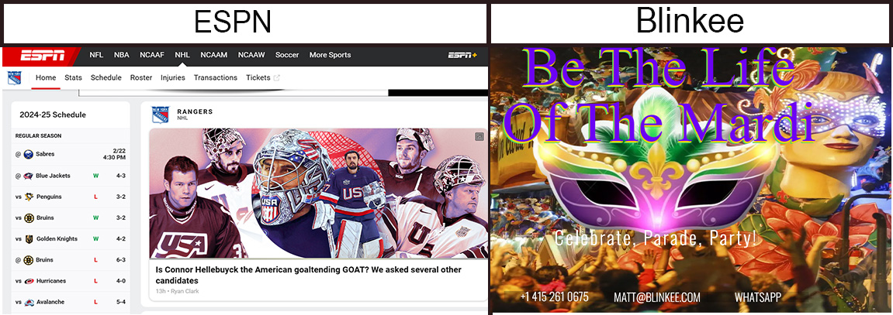

I’m going to give two examples of color theory. One that I feel works well and one that doesn’t.
I will start with the one that doesn’t work well, while I like the colors, I feel there is too much going on. The homepage for Blinkee uses a nice high intensity, glowing color scheme that catches the eye of visitors but unfortunately the text colors are very similar to the background colors making the text very hard to read. In addition, the variety of colors in the background image makes it almost impossible to find a single contrasting color that makes the text easy to read. If the company was set on using this image on the homepage I would suggest to use it as a banner or an image on the page with text around it. They could then use a complementary color scheme of a yellow background and blue/violet and red/violet for the text around the image.
A good example of a well thought out color scheme is ESPN. The contrasting colors of the black font on the white background makes the text easier to read.
Understanding that choosing the right color scheme can enhance a website, choosing the wrong color scheme can be detrimental and frustrating to a potential customer visit.
Disclosure: This is not a real website.